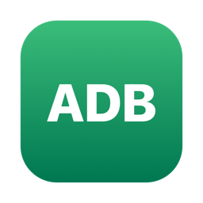

AdbFiles
A native macOS file browser for your Android phone. Fast, keyboard-friendly, and works like Finder.
Features
Instant browsing
Talks to the ADB server directly instead of starting an adb process for every action. Folders open from cache, refresh in the background, and are prefetched when you hover over them.
Handles huge folders
A native table view stays smooth with 10,000+ photos in DCIM. Sort by name, date, size or kind, with folders first.
Drag & drop
Drag files out to Finder (the download starts on drop) or drop files in to upload. Moving between folders works too.
Quick Look & thumbnails
Press Space to preview photos, videos and documents. Thumbnails load lazily and are cached on disk.
Transfers queue
Shows progress, speed and ETA, with cancel and retry. Handles files over 4 GB. Asks before replacing a file with the same name.
File operations
Rename, delete, new folder, move, copy and copy path. Cyrillic and emoji names are fully supported.
Feels native
Standard shortcuts, context menus, breadcrumbs, Back/Forward, type-to-select, dark mode, and sidebar bookmarks for common locations.
Reliable
Copes with a cable unplugged mid-transfer, unauthorized devices, timeouts and several phones at once.
Install
- Install the Android platform tools:
brew install android-platform-tools - On your phone, turn on Developer options → USB debugging and connect it with a cable.
- Download AdbFiles.dmg, open it, and drag AdbFiles to Applications.
- Open the app and confirm the USB debugging prompt on your phone.
The app is not notarized by Apple, so on first launch macOS will say it “cannot verify the developer”. Right-click AdbFiles in Applications and choose Open. On macOS 15 or later, open it once, then go to System Settings → Privacy & Security and click Open Anyway. You can also run:
xattr -dr com.apple.quarantine /Applications/AdbFiles.appKeyboard shortcuts
| ⌘[ ⌘] ⌘↑ | Back, Forward, Enclosing folder |
| Return, ⌘↓ | Open |
| Space, ⌘Y | Quick Look |
| ⌘R, ⇧⌘. | Refresh, Show hidden files |
| ⇧⌘N | New folder |
| ⌘⌫ | Delete (with confirmation; Android has no Trash) |
| ⇧⌘D, ⌘U | Download to…, Upload… |
| ⌥⌘C | Copy path |
Build from source
AdbFiles is a Swift package with no third-party dependencies. You need Xcode 16 or later.
git clone https://github.com/oleg3505/adb-files.git
cd adb-files
swift test # unit tests
scripts/run.sh # build and launch a debug app
scripts/make-dmg.sh # release build → build/AdbFiles.dmg